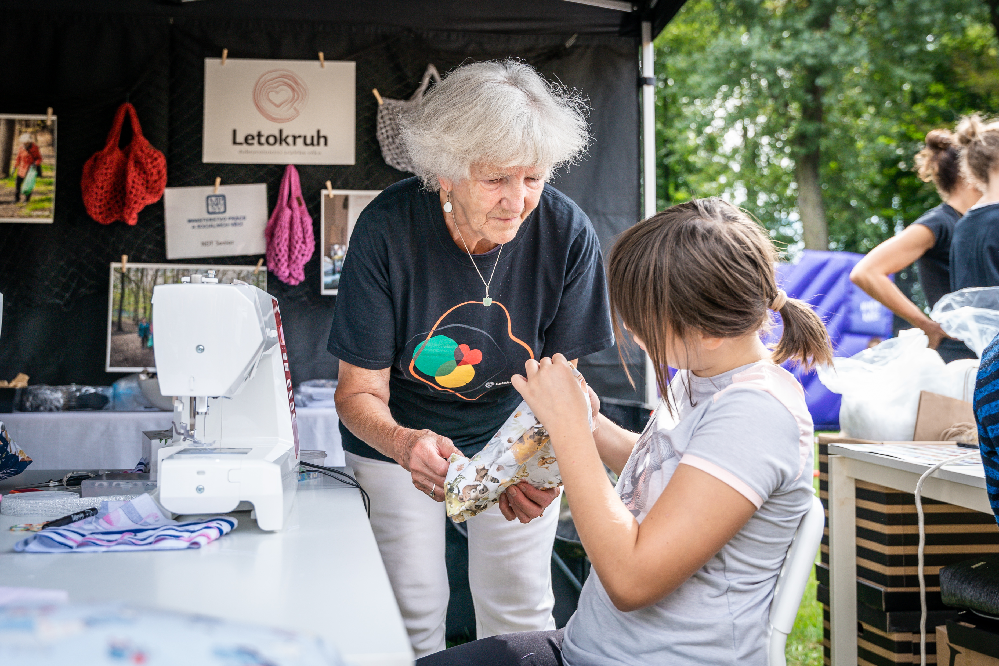

Komunita dobrovolníků a přátel Letokruhu
Členství v Dobroklubu nabízí specifické výhody pro všechny, kteří se chtějí zapojit do komunity Letokruhu.
Jako člen Dobroklubu máte volný vstup na širokou škálu volnočasových aktivit organizovaných Letokruhem.
Členové Dobroklubu mají vybrané akce ZDARMA a vzdělávací semináře a kurzy za zvýhodněnou cenu.
Přístup ke komunitě a dalším klubovým akcím. Přednostní přístup k informacím o aktivitách Letokruhu.
Jako aktivní dobrovolník Letokruhu se můžete stát členem Dobroklubu. Stačí se zaregistrovat a splnit podmínky dobrovolnické služby.
Registrace dobrovolníkaI bez dobrovolnické činnosti se můžete stát členem Dobroklubu. Zaregistrujte se a získejte přístup ke komunitě a zvýhodněným akcím.
Registrace členaÚčast na většině kurzů je možná i bez členství. Kurzy a workshopy se hradí jednotlivě, buď jednorázově nebo jako kurzovné za dané období. Členové Dobroklubu mají vybrané akce ZDARMA a vzdělávací semináře a kurzy za ZVÝHODNĚNOU CENU.
Ano. Díky registraci vás můžeme přihlašovat na všechny aktivity v Letokruhu. Získáte také přístup do portálu MŮJ LETOKRUH, ve kterém si snadno můžete své rezervace spravovat online.
Kurzy mají omezenou kapacitu. Je proto vhodné rezervovat si své místo co nejdříve. Přihlásit se můžete sami přes portál MŮJ LETOKRUH nebo na emailu a telefonu konkrétní pobočky, ve které kurz probíhá.
V hotovosti nebo QR kódem na pobočce nebo online v portálu MŮJ LETOKRUH. Na email vám poté přijde potvrzení s fakturou.
Při odhlášení do 24 hodin před začátkem lekce vám vrátíme částku v podobě kreditu na vaše konto MŮJ LETOKRUH.
U dlouhodobých kurzů má každý klient nárok na ukázkovou lekci zdarma, teprve potom se může rozhodnout, zda si zaplatí celý kurz. U celoročních jazykových kurzů je po dohodě s lektorem možné přeřazení do skupiny s vyšší nebo nižší úrovní. U ostatních celoročních kurzů existuje možnost refundace (zrušení zaplacené lekce/kurzu) pro případ, že z nějakého důvodu na kurz dál chodit nemůžete nebo nechcete.